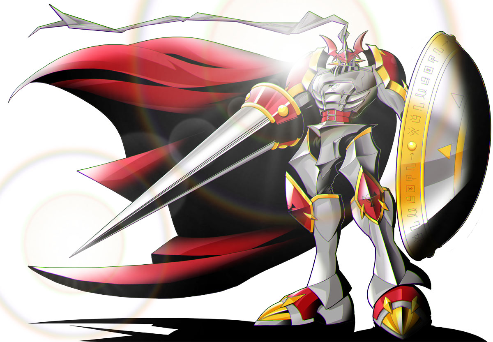

About Gallanmont
Gallantmon is an awesome digimon. He is an Exalted Knight Digimon. One of the "Royal Knights", it is a being containing contradictions, as it is called a guardian deity of the Net despite being a Virus attribute, and if by any chance its balance is lost, it is possible for it to become a dangerous being.
Knight Gallantmon
Gallantmon's Characteristics
- He's a great looking digimon
- He's one of the 7 knights
- He's the strongest knight
Gallantmon's Friends
Gallantmon has some awesome friends. Beelzemon is one of his best friend. He's an awesome digimon to look at as well. Click on the links below to read more about them: